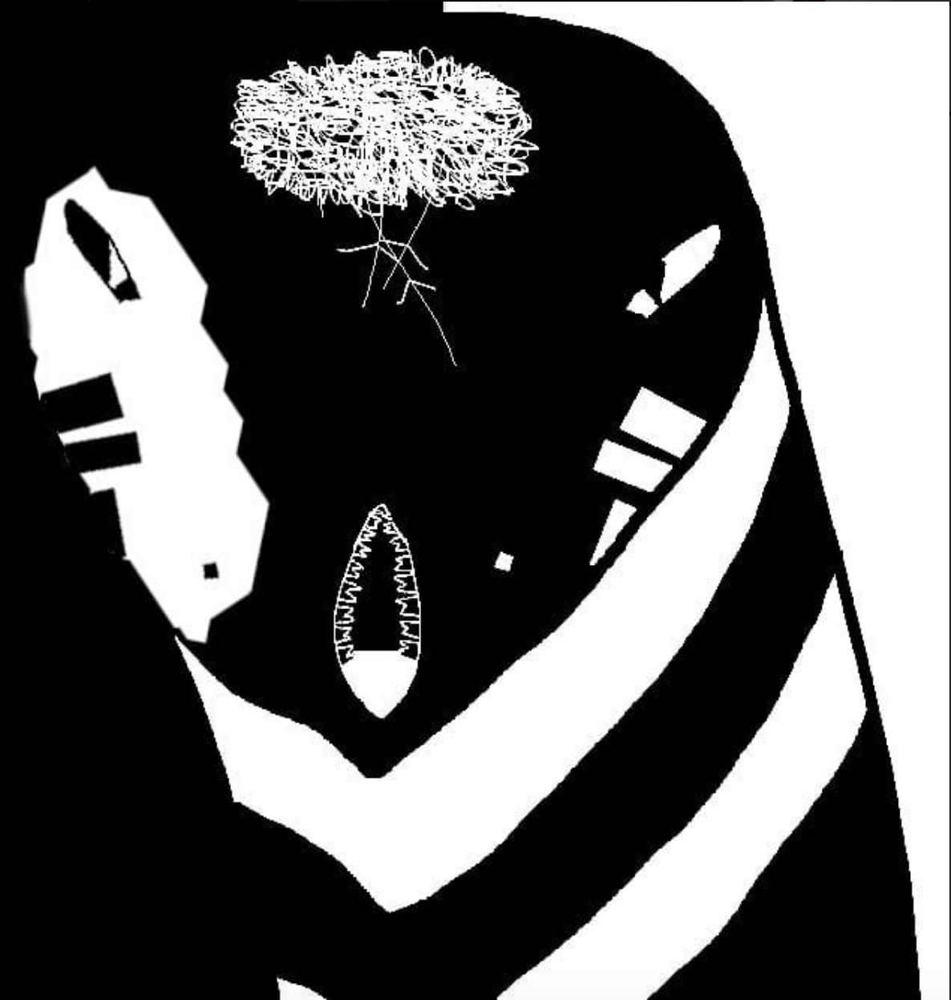
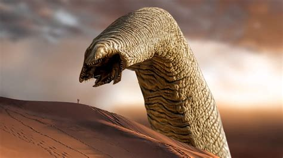

Hey you, willkommen auf der offiziellen PleaseReadDune Webpage! Hoffentlich wurde dir diese Seite in aller Freundschaftlichkeit und Liebe zugeschickt. Doch täusche dich nicht, regardless of the motive your fellow Dune-Reader had, solltest du alsbald den Buchhandel deines Vertrauens aufsuchen und dir dort deine eigene Kopie des legendären Science Fiction Epos "Dune", oder auf deutsch: "Der Wüstenplanet", von Frank Herbert zulegen. Zu Deiner eigenen Sicherheit und körperlichen sowie seelischen Unversehrtheit empfehlen wir dir, das Buch gleich nach Erwerb so weit wie möglich durchzulesen.
Was du hier siehst ist Shai-Hulud, der Großvater der Wüste, der Bringer des Todes und des Lebens zugleich, der Macher, der größte Organismus auf Arrakis (meinen zumindest die Außenwelter).
